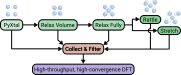
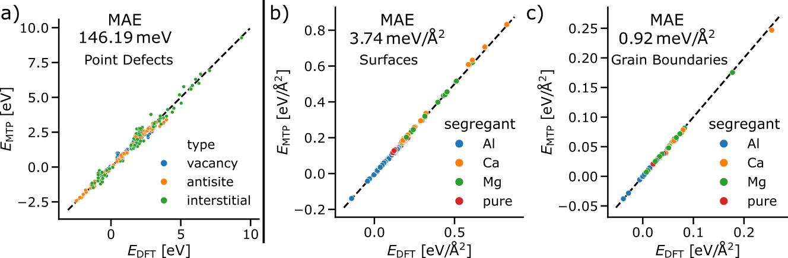
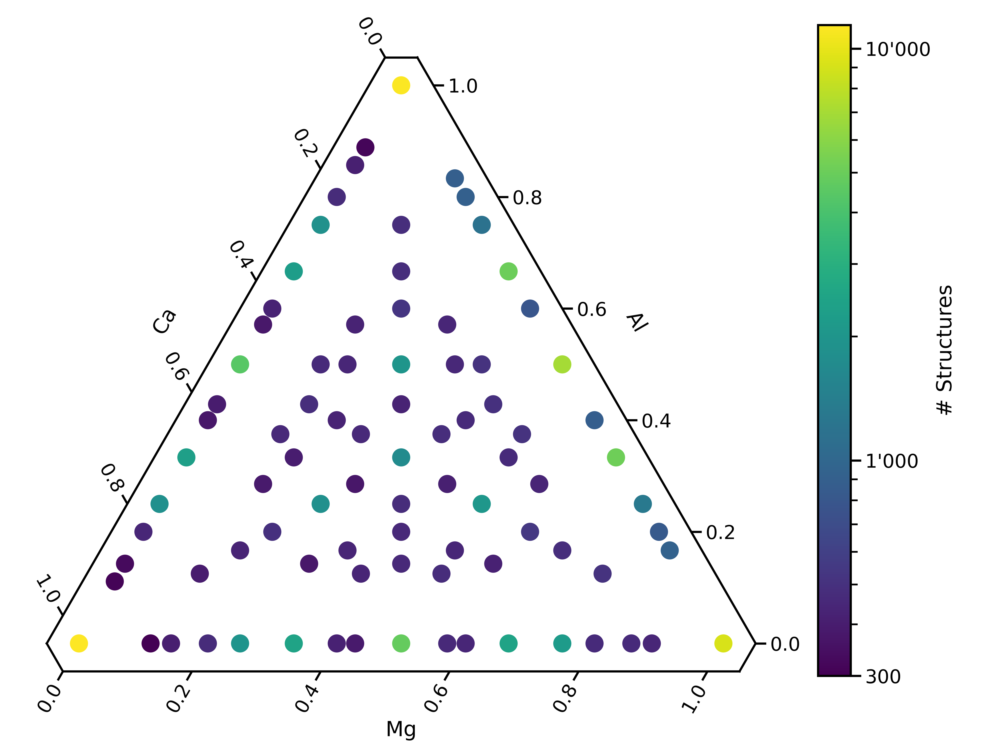

Generating datasets for Machine Learning Interatomic Potentials with the ASSYST method #
References#
from pyiron_core import Workflow, PyironFlow, as_function_node, as_inp_dataclass_node
from pyiron_core.pyiron_nodes.atomistic.assyst.stoichiometry import ElementInput, Stoichiometry, StoichiometryTable
Background #
Automated Small SYmetric Structure Training or ASSYST is a method to generate training data for machine learning potentials. The key idea is to use small structures to automatically explore structurally and chemically diverse atomic environments and provide training data around the energetically most favorable ones.
Workflow Overview #

Transferability #
ASSYST trained potentials describe also structures that they are not directly trained on, such as point and planar defects.

Liquid state is also well described and potentials are stable for long running thermodynamic integrations.

This phase diagram is our goal for today!
Literature #
Mg and Defects: https://journals.aps.org/prb/abstract/10.1103/PhysRevB.107.104103
Ternary Mg/Al/Ca: https://www.researchsquare.com/article/rs-4732459/v1
Constructing element combinations #
The first step in the ASSYST workflow is to decide which chemical space to cover and how densely. Increasing the new number of total atoms allows you to generate more and more complex structures and also sample the chemical space more densely.
Here’s an example for a ternary system, where we sampled the unaries with ASSYST datasets of 1-10 Atoms and the binaries and ternaries with 2-8 or 3-8 Atoms, respectively.

Log-histogram of composition of a final training set.
Elements wraps a list of compositions at which we will sample random crystals.
mg = Stoichiometry((
{'Mg': 2}, {'Mg': 4}
))
mg
Stoichiometry(stoichiometry=({'Mg': 2}, {'Mg': 4}))
al = Stoichiometry((
{'Al': 1}, {'Al': 2}
))
al
Stoichiometry(stoichiometry=({'Al': 1}, {'Al': 2}))
Can be combined with standard python operations.
mg + al
Stoichiometry(stoichiometry=({'Mg': 2}, {'Mg': 4}, {'Al': 1}, {'Al': 2}))
mg | al
Stoichiometry(stoichiometry=({'Mg': 2, 'Al': 1}, {'Mg': 4, 'Al': 2}))
mg * al
Stoichiometry(stoichiometry=({'Mg': 2, 'Al': 1}, {'Mg': 2, 'Al': 2}, {'Mg': 4, 'Al': 1}, {'Mg': 4, 'Al': 2}))
Created by the ElementInput node and visualized by StoichiometryTable.
wf = Workflow("ASSYST_Elements_Unary")
wf.Element = ElementInput(element="Mg")
wf.ElementsTable = StoichiometryTable(wf.Element)
pf = PyironFlow([wf])
pf.gui
Task
Build a small workflow that creates a table with Mg, Al and Ca so that:
Mg:Ca is always 2:1
combines it with 2-8 Al
has at least 2 Ca in every composition
contains at most 16 Atoms
Check utilities for nodes to Add(), Multiply() or Or() objects together.
Check atomistic -> mlips -> fitting -> assyst for nodes to FilterSize() or ElementsTable()
Solution
Load this workflow for the solutionfrom pyiron_core.pyiron_nodes.basic.logic import Or
from pyiron_core.pyiron_nodes.basic.math import Multiply
from pyiron_core.pyiron_nodes.atomistic.assyst.stoichiometry import FilterSize
wf = Workflow("ASSYST_Elements_Combine")
wf.Mg = ElementInput(element="Mg", min_ion=4, max_ion=10, step_ion=2)
wf.Ca = ElementInput(element="Ca", min_ion=2, max_ion=10, step_ion=2)
wf.Al = ElementInput(element="Al", min_ion=1, max_ion=10, step_ion=1)
wf.combo = Or(x=wf.Mg, y=wf.Ca)
wf.product = Multiply(x=wf.combo, y=wf.Al)
wf.filter = FilterSize(elements=wf.product, min=0, max=16)
wf.ElementsTable = StoichiometryTable(wf.filter)
pf = PyironFlow([wf])
pf.gui
Full Workflow for a Small Structure Set #
This demonstration uses the GRACE universal force fields for the relaxation steps. Usually we would run them in low convergence DFT.
from pyiron_core.pyiron_nodes.atomistic.assyst.plot import PlotSPG
from pyiron_core.pyiron_nodes.atomistic.assyst.stoichiometry import SpaceGroupSampling
from pyiron_core.pyiron_nodes.atomistic.calculator.optimize import RelaxLoop, GenericOptimizerSettings
from pyiron_core.pyiron_nodes.atomistic.structure.transform import RattleLoop, StretchLoop
from pyiron_core.pyiron_nodes.atomistic.engine.grace import Grace
from pyiron_core.pyiron_nodes.atomistic.structure.group import CombineStructures, SaveStructures
def make_assyst(
name, *elements,
min_atoms=2, max_atoms=4, max_structures=50,
delete_existing_savefiles=False
):
wf = Workflow(name)
element_nodes = []
if len(elements) > 0:
e1, *elements = elements
stoi = ElementInput(e1, min_atoms=min_atoms, max_atoms=max_atoms)
setattr(wf, 'Element_1', stoi)
element_nodes.append(stoi)
for i, e in enumerate(elements):
en = ElementInput(e, min_atoms=min_atoms, max_atoms=max_atoms)
setattr(wf, f'Element_{i+2}', en)
element_nodes.append(en)
stoi = Multiply(stoi, en)
setattr(wf, f'Multiply_{i+1}_{i+2}', stoi)
if len(elements) > 0:
wf.Multiply = stoi
spg = SpaceGroupSampling(
elements=stoi,
spacegroups=None,
max_atoms=len(element_nodes) * max_atoms,
max_structures=max_structures
)
else:
spg = SpaceGroupSampling(
max_atoms=max_atoms,
max_structures=max_structures
)
plotspg = PlotSPG(spg)
calc_config = Grace()
optimizer_settings = GenericOptimizerSettings()
volume_relax = RelaxLoop(mode="volume", calculator=calc_config,
opt=optimizer_settings, structures=spg)
full_relax = RelaxLoop(mode="full", calculator=calc_config,
opt=optimizer_settings,
structures=volume_relax.outputs.relaxed_structures)
rattle = RattleLoop(
structures=full_relax.outputs.relaxed_structures,
sigma=0.25,
samples=4
)
stretch = StretchLoop(
structures=full_relax.outputs.relaxed_structures,
hydro=0.8,
shear=0.2,
samples=4
)
combine_structures = CombineStructures(
spg,
volume_relax.outputs.relaxed_structures,
full_relax.outputs.relaxed_structures,
rattle,
stretch
)
savestructures = SaveStructures(combine_structures, "data/Structures_Everything")
wf.SpaceGroupSampling = spg
wf.PlotSPG = plotspg
wf.Calculator = calc_config
wf.OptimizerSettings = optimizer_settings
wf.VolumeRelax = volume_relax
wf.FullRelax = full_relax
wf.Rattle = rattle
wf.Stretch = stretch
wf.CombineStructures = combine_structures
wf.SaveStructures = savestructures
return wf
wf = make_assyst('ASSYST', 'Mg', 'Ca', 'Al')
wrapped: <function Grace at 0x7f3fe2a6fa60>
pf = PyironFlow([wf])
implement connect to self
implement connect to self
implement connect to self
implement connect to self
connected to node (self)
connected to node (self)
connected to node (self)
connected to node (self)
pf.gui
Precomputed Full Workflow with Large Structure Set #
This is the same workflow, but pre-run with realistic input for a Unary system. It contains ~10k structures and you can attach plotting functions at various nodes to view them.
wf = make_assyst('ASSYST_Mg_FULL', 'Mg', min_atoms=1, max_atoms=10, max_structures=None)
wrapped: <function Grace at 0x7f3fe2a6fa60>
pf = PyironFlow([wf])
implement connect to self
implement connect to self
implement connect to self
implement connect to self
connected to node (self)
connected to node (self)
connected to node (self)
connected to node (self)
pf.gui